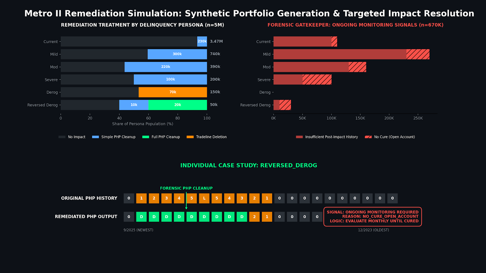

November 2023
Keep the accurate late mark
The original delinquency began November 1, before the bank’s error. November’s late mark stays visible. The original date and monthly history remain available for audit.
Metro 2 Remediation Sandbox
The customer was already late when the bank made an error. Would they have caught up without it? We can’t know. In this study, the bank gives the consumer the benefit of that uncertainty and preserves the history it knows was accurate.
I built two PostgreSQL modules to test those decisions across 25,000 synthetic accounts. You can run the same tool, change the cure rule, and see which customers would need another month of review.
Account 24064 · Nov 2023 – Apr 2024
Choose a month to compare the original history with the proposed correction.
1–6 = increasing delinquency · D = no history reported
The issue has ended. February is still 120–149 days past due. The bank extends the correction into February while it watches for recovery.
Account 24064 · 25,000-account study
The reviewer has two decisions to make. Which entries can the bank correct now? What evidence would justify closing the case?
November 2023
The original delinquency began November 1, before the bank’s error. November’s late mark stays visible. The original date and monthly history remain available for audit.
December 2023 – April 2024
The bank issue runs from December through January. February, March and April are all still delinquent. The sandbox suppresses the two issue months and the three that follow. April is the provisional end of credit impact.
May 1, 2024 reporting date
The bank proposes current status and clears the active delinquency date. Three original months have arrived since January. Zero were current. The bank can correct the record today while continuing monthly review until cure.
November establishes where the customer stood before the error. It cannot establish what they would have done afterward. Carrying that delinquency forward would make the customer bear the uncertainty the bank created.
Request May’s original performance from the June 1 snapshot. A new late month during continuing impact extends cleanup. Three consecutive original current months establish cure. At this cutoff, neither a cure start nor a confirmation date is known.
Account Status (17A) changes from 84 to 11. The original November 1, 2023 date of first delinquency is explicitly cleared from the proposed record. In the payment history profile (PHP), April is the first position. The first five monthly entries change from 65432 to DDDDD. The sixth, November’s 1, stays. The elected status and the three-month cure threshold are sandbox policy. How the reporting date relates to payment history
Account 175 · 1,000-account replay
The issue ends in March 2025, but April is still late. May begins a run of current months. Follow the original evidence to see when the bank can stop correcting history and close the review.
February, March and April are the only months corrected. May, June and July each report current in the original history. July completes the streak, visible in the August 1 snapshot. Cure is effective in May.
Select the latest performance month available to the analyst. The complete case above uses the October 1 snapshot, which contains history through September 2025.
May, June and July each carry an original 0. The credit window closes at April. The proposed history replaces February’s 1, March’s 2 and April’s 1 with D. The account leaves the review queue.
The SQL stores the first month of the qualifying streak as credit_cure_date. This page derives the confirmation month from the original records and the required streak length. Later current months can continue beyond confirmation. Inspect account 175 · Read the cure calculation
This read-only query shows the incident dates, the working credit window and the latest month available to the analyst.
SELECT account, impact_start_date, impact_end_date,
credit_impact_start_date, credit_impact_end_date,
credit_cure_date, cure_consecutive_months_required,
php_left_byte_date AS latest_performance_month,
post_impact_month_count, remediation_treatment, manual_review_reason
FROM module2.metro2_remediation_window_eval
WHERE manual_review_flag = 1
ORDER BY latest_performance_month, account;A fresh study generates a financial-impact interval for each account. For a follow-up on the same accounts in the same database, use the documented monthly rerun mode after adding original reporting months. It keeps the financial-impact dates from the prior run while recalculating reversal, cure and treatment. See the guide in the PowerShell study kit. Fixed-date follow-up controls · Incident inputs · Review dispositions
Account 327 and comparison cases · 1,000-account replay
A March charge-off followed a bank issue that ended in January. In April, the account returned to ordinary delinquency. That evidence changes the treatment. Compare it with an unresolved charge-off.
The simulation treats a return to ordinary payment codes as evidence of reversal. A bank would verify that reversal in its servicing records. A single current month still falls short of the three needed for cure.
Replay account 327 · Reporting date October 1, 2025
| Period | Start | End |
|---|---|---|
| Bank issue | ||
| Credit impact | · provisional | |
| Qualifying cure streak | Sep 2025 · candidate | Unconfirmed |
September is the latest represented month and the first current month in a possible cure streak. Three consecutive original current months are required. The bank issue has ended, but the data establish no earlier end to the credit impact.
3). The October and November late marks precede the issue.4).L) appears after the issue ends, inside the continuing credit-impact window. If March were the last month available, the engine would propose whole-tradeline deletion because the event was still unresolved.L to 5. In this simulation that April entry establishes reversal of the March charge-off. Re-evaluation now retains the tradeline, proposes monthly cleanup and returns the account to review. The consumer is still 150–179 days past due. No current streak has begun.0), and the reporting snapshot shows Account Status 11. The original history contains just one consecutive current month after the charge-off.Retain the tradeline. Replace the nine adverse entries from December 2024 through August 2025 with D, including the March charge-off. October and November 2024 retain their original late marks. September’s original 0 begins a possible cure. Obtain October’s original performance next. If October and November both prove current, November would confirm a cure effective in September.
Each cell shows the original and proposed monthly codes. Select a month to see its place in the bank issue, reversal or cure review.
The April 1 historical dashboard shows the same payment pattern, nine suppressions and ongoing review. It publishes neither a numeric ID nor the bank-impact dates. The dated decisions shown here come from account 327 in the independent 1,000-account replay.
Independent replay account 987 · Reporting date December 1, 2023
| Period | Start | End |
|---|---|---|
| Bank issue | ||
| Credit impact | ||
| Qualifying cure streak | No qualifying start | Unconfirmed |
The bank issue ends in the latest represented month. The record contains zero later months in which to establish cure.
0).1, 30–59 days past due).L) during the issue.Propose DA in Account Status to delete the entire tradeline. Charge-off appears during the bank issue and persists through the last available month. November’s original L is the latest major event. No subsequent original numeric performance establishes reversal by this snapshot. The module keeps all 25 original months as evidence and ends cure monitoring on its deletion proposal. A bank would separately track delivery and verify the bureau outcome.
Replay account 958 · Reporting date October 1, 2025
| Period | Start | End |
|---|---|---|
| Bank issue | ||
| Credit impact | · provisional | |
| Qualifying cure streak | No start observed | Unconfirmed |
Four months of original performance follow the end of the bank issue. All four are delinquent. The account has yet to record the first current month of a qualifying streak.
1).2).3 through 6. The account remains delinquent. Its history contains no major derogatory event.Replace the six affected late marks from April through September with D. Keep the bank issue dates fixed and review the next original month to see whether the credit impact continues or a possible cure begins.
Original SQL for cure and credit-impact dates · See how the revised policy selects a treatment
Population study · 25,000 accounts
The engine proposed monthly corrections for 4,028 of 25,000 accounts and whole-tradeline deletion for 466. All other accounts kept their reported history. The two study sizes below were generated separately.
| Action | 1,000 | 25,000 |
|---|---|---|
| Keep history as reported | 803 | 20,506 |
| Correct late months | 172 | 3,904 |
| Correct derogatory and late months | 3 | 124 |
| Delete the tradeline | 22 | 466 |
94 accounts first showed a charge-off during their bank issue. Of those, 58 received a deletion proposal and 36 received targeted cleanup. Account 24,267 first charged off in August 2024, two months before its bank issue ended in October. It remained charged off in November, its last observed month. Inspect account 24,267
Account 327’s bank issue ran from December 2024 through January 2025. Its March charge-off occurred after the issue ended, while the reporting impact was continuing. A return to delinquency in April and one current month in September left cure unconfirmed. It received nine monthly corrections and stayed under review. Inspect account 327
The revised engine proposed 11,071 monthly substitutions on 4,028 retained tradelines. Of the 3,048 accounts flagged for another monthly review, 2,058 had too few post-issue months to test for cure and 990 were open with sufficient history and no confirmed cure. A deletion carries its own downstream delivery and verification work.
Extract the PowerShell study, open PowerShell in the extracted folder, and run the command below. It creates a fresh PostgreSQL database and keeps the database available for DBeaver. The included guide lists connection options and the output files.
powershell.exe -NoProfile -ExecutionPolicy Bypass -File .\tools\Run-Metro2Study.ps1 -AccountCount 25000This run used PowerShell 7.7 and PostgreSQL 16.2. An independent SQL check reconstructed the cure dates, credit-impact boundaries, treatment, review decision and monthly changes from original records. It agreed on all 25,000 accounts and 873,193 account-months. The four treatment counts describe this generated population.
Download counts, run manifest and independent checks · Read the code changelog and audit
Manual review · 25,000-account study
Of the 3,048 accounts still in cure review, 2,058 have too little original history after the bank issue to test for three consecutive current months. The other 990 have enough history and remain open without a qualifying streak.
The handoff gives a reviewer the original incident dates, the credit-impact window through the latest evidence, the severe-event and reversal evidence when present, the current streak and the next month to request. The workbook also shows the original and proposed status, payment rating and delinquency date side by side with the monthly histories. Reviewers can record their name, disposition and notes.
Treatment choices · Independent 1,000-account replay
The engine locates the latest original major event in the evaluated credit window. This includes collection (G), foreclosure (H), voluntary surrender (J), repossession (K) and charge-off (L). It looks for later original performance from 0 through 6 up to the reporting cutoff or cure confirmation. A later major event inside the window starts a new reversal check.
Read the dated reversal check · Read the treatment order · Inspect the monthly substitutions
Field guide
Metro 2® is the format lenders use to send account information to consumer reporting agencies. CDIA provides the current Credit Reporting Resource Guide® to approved users. CDIA’s format and access guidance
11 identifies a current account. An account can be current today and still have a late month in its history.Read the reporting date first. Field 17A represents account status as of Field 24, the Date of Account Information. Field 18 holds up to 24 prior reporting periods, most recent first. In the February 1 record for account 17899, status is as of February 1 and history positions one and two represent January and December. This sandbox uses first-of-month snapshots. 2020 CRRG, Field 18 and Exhibit 5
Furnisher timing. Reporting dates can vary by furnisher and statement cycle. GOLDPoint and FPS GOLD describe the prior-period sequence in their reporting systems. M2 Reporter’s payment-reversal example dates the first history position to the previous month. Equifax on reporting cycles · GOLDPoint, Field 18 · FPS GOLD, payment history · M2 Reporter, FAQ 49
Reading a bureau grid. Experian describes building history from monthly reports or using a verified furnisher-supplied grid. A consumer-facing row of months can therefore have a different origin from one raw Field 18. For an audit, start with the dated record the bank sent and reconcile the bureau’s result separately. Experian reporting FAQ · CCA field guide for readers
Model assumption. The generator uses prior payment history to simulate status as of the reporting date. A live furnisher uses contemporaneous account records for that date. The bank’s actual adjustment and the as-of status it furnishes need support in those records. Regulation V, accuracy and integrity
Account 17899 offers a one-month field example. December’s accurate late mark stays. The bank issue affects January alone. On the February 1, 2025 record, the bank elects current status 11 and proposes clearing the December date. The first PHP position represents January (D), and the second represents December (1). February performance is first visible on March 1. At the study cutoff, zero post-issue months are available. Inspect account 17899
00000000 when the reporting hierarchy calls for no date. Certain bankruptcy or receivership indicators can require a date even with status 11. The sandbox assumes the ordinary case for this example and does not model those indicators. 2020 CRRG, Field 25 · CFPB, Hyundai Capital order ¶59In the 25,000-account study, 2,340 accounts received a proposed DOFD clear and stayed in monthly cure review. In 329 of them the date preceded the bank issue. A pre-issue date can have been accurate then and still cease to apply under the bank’s proposed treatment for a later month. See why account 24064 keeps November’s late mark
A separate source check found 130 retained accounts already missing a date that their effective status calls for under the historical guidance. Those records require servicing research to establish the date. Download the 130 source exceptions
What would change the decision? Suppose May was late, June–November were originally current, and December and January were late. A May onset cannot explain this new delinquency. With an original D between May and January, continuity would instead be unknown. In either case, correct the affected January entry, retain the supplied fields as evidence and ask servicing to establish the onset. The worklist holds the disputed decision for research. Read the controlled follow-up
The review flag gives an analyst a reason to revisit a case as later months arrive. A regular furnisher that determines it sent incomplete or inaccurate information must promptly notify the receiving agency and provide the information needed to correct it. The sandbox’s follow-up cadence applies to unresolved impact. Its three-month threshold and treatment choices are assumptions for testing. 15 U.S.C. § 1681s–2(a)(2) · CFPB furnishing guidelines
Field 18 records monthly performance. In that field L identifies a charge-off and D identifies unavailable payment history for one month. An Account Status of DA is a whole-account deletion instruction for a reporting error. In the worked cases, the documented bank issue and the subsequent performance determine which proposed correction the sandbox selects.
The project sets the number of current months required for cure and specifies which treatment to propose for a given history. The five references document the reporting format and its use.
Bank remediation · Furnisher responsibilities
For account 327, the October 1 snapshot, with history through September, supports correcting nine entries and reviewing the next original month. A bank would verify that the March charge-off was actually reversed, using servicing transactions, reversals and account history. For account 987, whose charge-off persists, the sandbox proposes deletion of the tradeline. Either instruction requires a separate record of delivery and bureau processing.
The Fair Credit Reporting Act requires a regular furnisher that determines it supplied incomplete or inaccurate information to promptly notify the receiving consumer reporting agency (CRA), provide what is needed to correct the record, and stop sending information that remains wrong. Regulation V requires reasonable written accuracy and integrity policies, reviewed periodically. FCRA § 623(a)(2) · 12 CFR § 1022.42
The sandbox produces proposed fields and monthly decisions from synthetic histories. Transmission, bureau acknowledgment, downstream verification and financial redress are steps for a bank to perform separately.
For a covered direct dispute, the furnisher investigates, considers the consumer’s evidence, and reports the result to the consumer within the applicable FCRA period. If it finds an inaccuracy, it promptly corrects each CRA that received it. A CRA-referred dispute triggers a separate investigation and response to the referring agency. A finding of incomplete or inaccurate information also goes to other nationwide CRAs that received it. The monthly cure review runs on a separate clock. 12 CFR § 1022.43 · FCRA § 623(b)
Monetary redress depends on the harm and the governing remediation framework. The OCC’s historic Independent Foreclosure Review paired credit-report corrections with a fixed payment in defined circumstances. This sandbox models proposed credit-report corrections only. OCC framework, FAQs 29–31
The three-current-month threshold, the modeled credit-impact window, and the choice between monthly suppression and tradeline deletion are design decisions in this sandbox. CDIA documents the reporting format.
Module 1 · Synthetic portfolio generator
What happens if the bank requires four current months to confirm cure? In a matched run of 1,000 accounts, 14 more stayed in monthly review. Account 975 also changed from retaining the tradeline to proposing deletion. The guide lets you choose an account count and a cure threshold, run both modules in PowerShell, and open your own account explorer. Run your own simulation
You can use Module 1 on its own to test a credit-reporting function. It creates a dated row for each month of a synthetic account’s history. A monthly snapshot then places the previous 24 months into its Payment History Profile. Those dated rows give a tester something concrete to compare with every position in the snapshot.
For an October 1, 2025 snapshot, position 1 represents September 2025 and position 24 represents October 2023. A month before the account’s available history receives B. The separate full_php field joins the entire available history, which can extend to 84 months.
For a new experiment, connect DBeaver to a separate PostgreSQL 15+ test database. Both scripts drop and rebuild their own named tables. In Module 1, edit the six values in the module1_params insert, then run the complete script in one session.
The first value sets the account count. The next five allocate the starting mix across current, mild, moderate, severe, and derogatory profiles. The defaults are 5,000,000 accounts and shares of 70%, 15%, 8%, 4%, and 3%. For a smaller exercise, set the count to 1,000 and keep those shares. The generator derives account patterns from repeatable hashes. It assigns some eligible accounts a reversed major derogatory pattern for recovery testing.
The input checks require a positive count, shares between zero and one, and a combined share within 0.000001 of one. The review queries at the end show the resulting mix, closed accounts, status counts and recovery cases.
Try one check. Compare the newest character of account 1’s monthly snapshot with its status in the prior calendar month. The query reports each dated pair and whether the two characters match.
SELECT s.date_of_account_information AS snapshot_date,
(s.date_of_account_information - interval '1 month')::date AS represented_month,
h.status AS history_value,
left(s.php, 1) AS snapshot_value,
h.status IS NOT DISTINCT FROM left(s.php, 1) AS matches
FROM module1.metro2_sample AS s
LEFT JOIN module1.metro2_status_history AS h
ON h.account = s.account
AND h.byte_date = (s.date_of_account_information - interval '1 month')::date
WHERE s.account = 1
ORDER BY s.date_of_account_information DESC
LIMIT 6;The test exercises the date offset in a monthly reporting function. To test remediation next, run Module 2 in that same test database. Its default requires three consecutive current months after the financial impact ends.
Generator inputs and checks · How the snapshot is assembled · Ten generator review queries
Project evidence
The original dashboard uses the 500-account results recorded on April 1, 2026. Of those accounts, 405 had clean windows, 86 received delinquency cleanup, two received derogatory cleanup, and seven received a deletion instruction. Sixty-seven accounts needed review. The April chart code multiplies the counts by 10,000 for display, giving a portfolio of 5 million and a review queue of 670,000. A new 500-account execution reproduced the four treatment counts and both review reasons under the published SQL. Of the 67, 52 accounts needed more history and 15 had enough history without cure. The independent 1,000- and 25,000-account studies each report their actual record counts.

In March 2026 I started with a bank incident and a practical question. After the incident ends, how long should its credit-reporting consequences remain under review? I wanted to preserve earlier and later history outside the affected period, recognize a reversal of charge-off, and keep an account under review when there was too little evidence to close it.
On April 14 I added the two SQL modules to the repository. Module 1 builds original month-by-month performance so a changed reporting code can never become evidence that a customer paid on time. Module 2’s version notes document a correction to the deletion rule. A later numeric performance code can show recovery from a major derogatory event even while the customer is still delinquent. The program’s final QA query specifically exercises that outcome.
The remaining commits added and organized the dashboard and revised the README. Both SQL modules have retained their original published contents across the eight commits through the May 29 revision. Repository history · Version notes · Module 2 recovery check
The corrected November policy applies the same reversal test to every major event, including charge-off. It records the dates of the latest in-window severe event and the first subsequent original numeric mark. The dated source history shows their codes. The intervening rule requiring confirmed cure for charge-offs is documented in the comparison. Read the code changelog and audit
Use the included PowerShell launcher with -AccountCount 1000. The revised engine produced 1,000 decisions covering 35,395 original account-months. It proposed 461 monthly substitutions across 175 accounts, 22 whole-tradeline deletions, and 133 ongoing cure reviews. Download the current SQL and launcher
Use the read-only DBeaver query to export every account with a final remediation result, its original history, and its proposed treatment. The export records the Module 1 blueprint count separately. The Windows instructions also show how to produce the same file directly with PostgreSQL. Download the query, builder and instructions.
Repository preview · Release preview · Module 1 · Synthetic generator · Module 2 · Remediation engine · Project repository